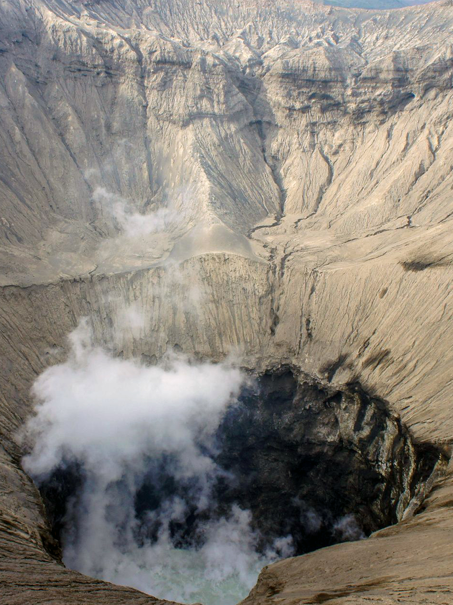

Tour in Bromo

Bromo Crater


Mount Bromo or in Tenggerese spelled "Brama", is an active volcano in East Java, Indonesia. This mountain has a height of 2,329 meters above sea level and is located in four districts, namely Probolinggo Regency, Pasuruan Regency, Lumajang Regency, and Malang Regency. Mount Bromo is famous as the main tourist attraction in East Java. As a tourist attraction, Bromo becomes interesting because of its status as an active volcano. Mount Bromo is included in the Bromo Tengger Semeru National Park area.

Padang Savanna Bromo or known as the 'Jemplang Valley' is a vast expanse of grassland located on the south side of Mount Bromo. savanna and sea of sand covering an area of approximately 10 square kilometers. the Bromo savanna looks like green hills that resemble the hills in the children's film "Teletubbies" which was popular in the 90s. That is why, not a few also call this savanna "Teletubbies Hill". Besides being used for sightseeing, this location is also often used by photographers as a point of taking photos for various purposes.

Before reaching the crater of Mount Bromo, you will be greeted with a wide expanse of sand. This stretch of sand is named as whispering sand. The area is quite large, visitors can easily take the best spots to take pictures expecially with your vehicle. In addition, in this sand you can also enjoy other activities, such as riding a tril motorbike, horseback riding, and much more. The location is east of the peak of Bromo. This sand is called whispering sand because when the wind blows this sand will make a sound as if it will whisper to us.

Beauty of Bromo crater which is so charming. However, to be able to see it at a closer distance, visitors must be willing to walk about 2 km from the parking area. Not to mention, there are still hundreds of steps for you to climb. But if you feel lazy to climb the stairs here or feel not strong, you can choose to ride a horse while enjoying the beauty that is around him. when you are above the crater you can see the active crater of Mount Bromo directly, you can also see the natural beauty around Mount Bromo from the top of the crater.

The entrance fee to Mount Bromo is IDR 29,000 per person, working days per day, holidays IDR 34,000 per day. For foreign tourists on weekdays IDR 220,000 and holidays IDR 320,000 per day. when you arrive in the bromo area you can look for hotels or lodging places whose prices vary from IDR 200,000 to more than IDR 1,000,000 per night. the next day if you want to ride a jeep you will be charged a rate of around IDR 700,000 - IDR 800,000 depending on the offer. when you want to go to Bromo crater riding a horse you will be charged a rate of IDR 125,000 to IDR 150,000.